CYLINDER BLOCK > DISASSEMBLY |
| 1. INSPECT CONNECTING ROD THRUST CLEARANCE |
 |
Using a dial indicator, measure the thrust clearance while moving the connecting rod back and forth.
| 2. REMOVE PISTON SUB-ASSEMBLY WITH CONNECTING ROD |
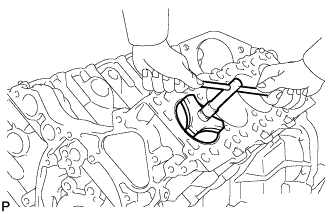 |
Using a ridge reamer, remove all the carbon from the top of the cylinder.
Uniformly loosen the connecting rod bolts, and remove the connecting rod cap with bearing.
Push out the piston and connecting rod with bearing through the top of the cylinder block.
| 3. REMOVE CONNECTING ROD BEARING |
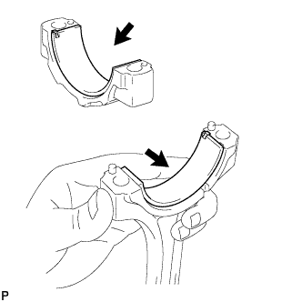 |
Remove the connecting rod and connecting rod cap bearings.
| 4. REMOVE PISTON RING SET |
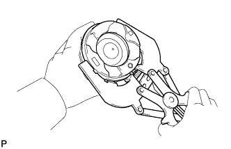 |
Using a piston ring expander, remove the No. 1 and No. 2 compression rings.
Using a piston ring expander, remove the oil ring.
Remove the oil ring expander by hand.
| 5. REMOVE PISTON WITH PIN SUB-ASSEMBLY |
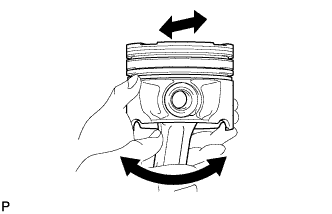 |
Check the fitting condition between the piston and piston pin by trying to move the piston back and forth on the piston pin.
If any movement is felt, replace the piston and pin as a set.
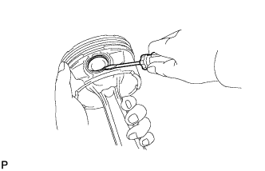 |
Using a screwdriver, pry out the 2 snap rings.
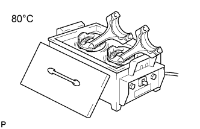 |
Gradually heat the piston to approximately 80°C (176°F).
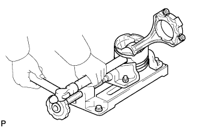 |
Using a plastic-faced hammer and brass bar, lightly tap out the piston pin and remove the connecting rod.
| 6. CLEAN PISTON |
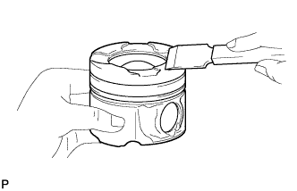 |
Using a gasket scraper, remove the carbon from the piston top.
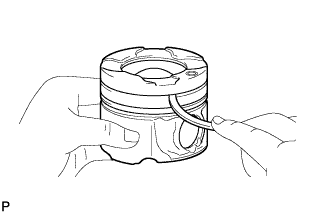 |
Using a groove cleaning tool or broken ring, clean the piston ring grooves.
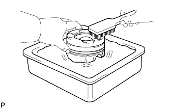 |
Using solvent and a brush, thoroughly clean the piston.
| 7. INSPECT CRANKSHAFT THRUST CLEARANCE |
 |
Using a dial indicator, measure the thrust clearance while prying the crankshaft back and forth with a screwdriver.
| 8. REMOVE CRANKSHAFT |
 |
Using several steps, loosen and remove the 10 crankshaft bearing cap set bolts uniformly in the sequence shown in the illustration.
 |
Using several steps, loosen and remove the 20 crankshaft bearing cap set bolts uniformly in the sequence shown in the illustration.
 |
Remove the 2 cylinder block stiffening plates.
 |
Using 2 crankshaft bearing cap set bolts, pull out the 5 bearing caps.
 |
Remove the crankshaft.
| 9. REMOVE CRANKSHAFT THRUST WASHER SET |
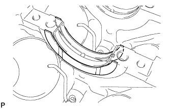 |
| 10. REMOVE CRANKSHAFT BEARING |
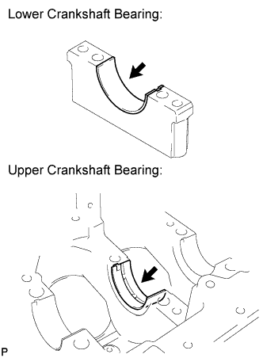 |
| 11. REMOVE NO. 1 OIL NOZZLE SUB-ASSEMBLY |
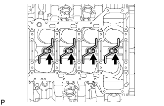 |
Using a 5 mm hexagon wrench, remove the 4 bolts and 4 oil nozzles.
| 12. INSPECT INPUT SHAFT BEARING (for Manual Transmission) |
Turn the bearing by hand.
If the bearing is stuck or difficult to turn, replace the input shaft bearing. For removal procedures, refer to the following (Click here) and for installation procedures, refer to the following (Click here).
| 13. REMOVE CYLINDER BLOCK STRAIGHT SCREW PLUG |
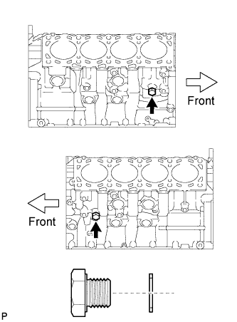 |
Remove the 2 straight screw plugs and 2 gaskets.